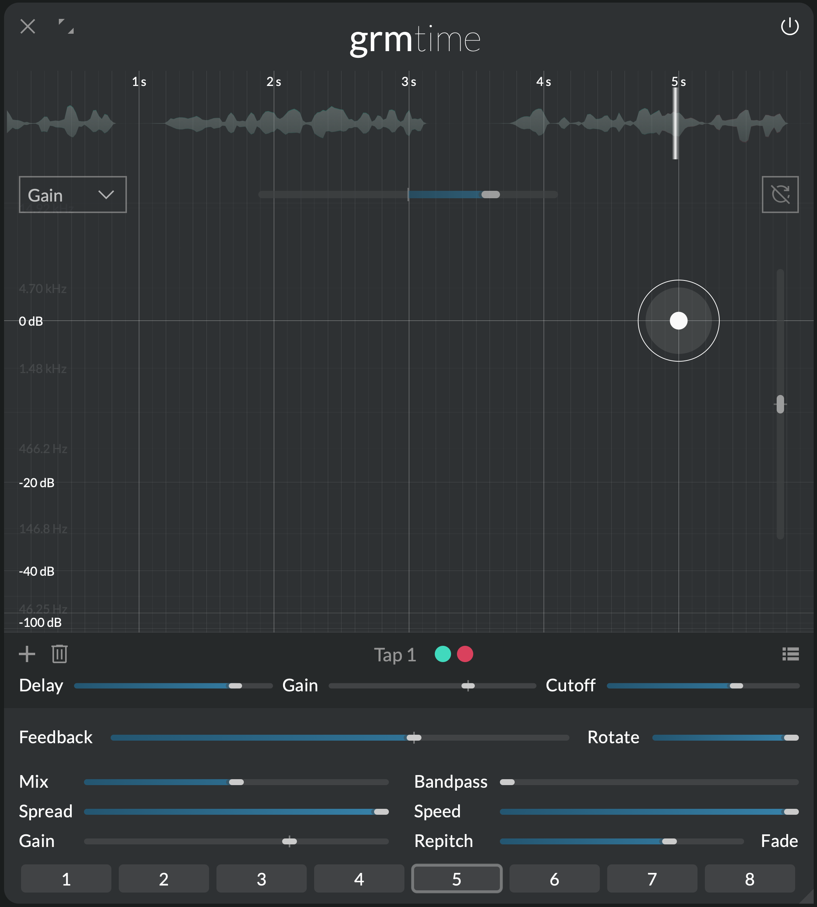

Temporal machine
Time

Time is a delay unlike any other. An exploration of how far the concept of a delay can be pushed into uncharted territories. In its simplest form, it takes audio as input, stores it in a buffer and replays it a while later. But with up to 32 freely-tunable taps, variable transport speed, continuous granular playback and per-tap band-pass filters, it can reach sound transformations yet unheard of. Time is the ace of spades of time-domain operations.
Features
- freely-tunable delay with multiple tap. Up to 32 taps, from milliseconds to minutes.
- per-tap resonant band-pass filter
- variable-rate read/write speed
- continuous control of repitching vs. granular (crossfading) playback
Context
From the advent of magnetic tape to digital storage, using the medium as short-term storage for sound is an infinite source of sound manipulations.
In the late 1950s, GRM started producing a series of revolutionary tape-playing machines used as sound processing instruments, the Phonogènes and Morphophones. Using complex pulley mechanisms and read-head drums, they could read small chunks of tapes at speeds independent of the tape transport, inventing the granular playback techniques that still power pitch shifting and time stretching algorithms nowadays. Using multiple read heads, arbitrarily placed on the tape and filtered indepedently, they could break free from the repetition of the simple feedback loop, radically transforming input sound material.
Time takes up where these machines left off, maintaining the tape analogy that makes things logical and easy to understand. At its heart, Time provides a large audio buffer, which the module's input is continuously written to. At any point in this buffer, one can place a read head (a tap), that reads the written material with a delay. The speed at which this buffer goes by is variable (Speed); like tape, the slower the speed the more delay, and the more the signal is degraded: there are less samples to record a given audio chunk.
Each tap is actually made of two read heads quickly relaying each other in reading the audio at their position (granular playback). Therefore, if the delay time is changed, it smoothly crossfades to the new position without clicks or repitches. In fact, and contrarily to usual delays, this crossfade time is freely settable (Repitch/Fade:), allowing for repitches, crossfades and a wealth of interesting in-betweens.
Just like on the Morphophone, each tap then goes to a band-pass filter (Bandpass) which resonant frequency can be set (Cutoff), and is then summed to the output. The feedback loop (Feedback) reinjects this sum back into the input, resulting in potentially complex impulse responses and reverberation-resonator-delay hybrids.
Controls
Cursor area
Click to add a tap; double-click a tap to remove it. Each tap reads from the same audio buffer at different delay times; it is then band-pass-filtered indepently and summed to the output and to the feedback path.
- Clear audio buffer: instantly clears all audio material in the buffer.
- Y axis parameter: The combo box determines which parameter is displayed on the Y axis (and consequently which is displayed on the Z axis, ie. cursors' halo size): either Gain or Cutoff.
The following parameters are local to each tap:
- Delay (X axis): Delay time of the tap.
- Gain (Y or Z axis): Gain of the tap.
- Cutoff (Z or Y axis): Band-pass filter cutoff frequency of the tap.
The following parameters have as many independently-modulatable instances as there are taps (see Modulation):
- Delay scale: Scales all delay times by the given ratio.
- Transposition: Transposes the cutoff frequencies of all taps.
Global controls
- Mix: Crossfades between the dry signal (0%) and the wet signal (100%).
- Speed: Transport speed, or how fast the digital "tape" is moving. Affects the speed at which the input audio is written to the buffer, as well as the read speed. At speeds < 1x, there are less samples to record the incoming audio, so the fidelity is (interestingly) degraded.
- Rotate: Rotates the channels in the feedback path (see Feedback). At 0%, each channel feeds back into itself; at 100%, each channel feeds back into the next one, and the last one feeds back into the first, resulting in a generalized ping-pong delay-like effect.
The following parameters have as many independently-modulatable instances as there are taps (see Modulation):
- Spread: Channel-locality of each tap. At 0%, each tap outputs only on the channels it is assigned to (see the global Spread section); at 100%, each tap plays all channels in parallel (multi-mono).
- Gain: Global gain of all taps
- Feedback: Amount of the sum of all taps that is fed back into the input. Careful: with several taps, may bloom and provoke loud sounds (even under 100%). To make blooming less aggressive, the feedback path includes a soft-clipping stage.
- Bandpass: How much band-pass filtering is applied to each tap. The bigger this value, the more resonance (or Q-factor) the band-pass filter has. 0 means no filtering at all.
- Repitch/Fade: Duration of the tap's playback grains. When >0, a change in delay time will result in a crossfade, hence no repitch; at 0, grains are so small that playback is continuous, which repitches the input when delay time is changed. Grains are always played at speed 1, so lowering Speed while this is >0 will result in constant repitching.
Tips and tricks
Rhythmic taps
Feed Time some simple rhythmic loop. Introduce a few taps, and arrange them in time so that they repeat incoming audio in a rhythm of your choosing. Vary their gain and/or cutoff to taste. Tuning is a precise but rewarding process, as you discover new syncopations and grooves.
Complex looping

With a single tap set to a long delay (several seconds), Time can be used as a simple looper: just crank Feedback to 100% and the material in the buffer will accumulate and repeat indefinitely (this is Snapshot 5). Start here: feed some live-played input (voice, guitar, synth) and build layers upon layers, interacting with past material as if it was another player.
From here, try out a few tricks: modulate the delay time slightly for imperfect repetitions, lower Speed and/or increase Bandpass for generational degradation, add a second tap closeby for complex stereo interplays... the world of delays is your oyster.
Flangers, choruses and all that
Flanger, chorus, ensemble, vibrato... all these classic effects are just variants of the same concept that can easily be recreated with Time: short delays (1 to 50 ms) modulated by LFOs. Mixing the dry and delayed signals carves out pleasing peaks and troughs into the frequency content of your audio.
An Agitation with 100% Cyclic will do the LFO. Add one or several taps around 10 ms, and modulate their delay times (use Delay scale). Increase Rotate for stereo width. Increase Feedback to taste. This is your bread-and-butter modulation effect; now explore this space for effects unheard of: different LFO shapes, audio-rate modulation, degrading with Speed and Bandpass, fade instead of repitch...
Precedence effect

One important cue to the localization of sound is its relative time of arrival: if one ear receives a sound before the other, the source will appear closer to it. A delay of a couple milliseconds is enough to trick our brain. It is sometimes called the Haas effect.
Replicate this in Time: in stereo and listening on headphones, add two taps: one at 0 ms, one around 2 ms. Set Spread to 0% and Mix to 100%. Your input will sound like it leans to the left, even though the gain of each channel is the same. Vary the right-ear delay time and observe the effect.
Using this creatively is a well of interesting ideas: the same principle with 4 or 8 channels (introducing the same number of taps) creates impossible spatial effects; modulating delay times instantly densifies simple material.
Reverb tails
As soon as more than one tap is introduced, Feedback will not sound like your standard repetitions. This is because what is fed back is the sum of all individual taps. For instance, with two taps at 1 and 0.1 seconds respectively and feedback high enough, you will get repetitions at seconds 0.1, 1, 1.1, 2, 2.1, 2.2, 3, 3.1, 3.2, 3.3 etc.: as the repetitions tail off, they become "denser" (closer to each other). This can be used at your advantage: with >4 taps and carefully choosing their times, we can come up with delay tails that quickly densify like reverbs, resulting in a variety of hybrid reverb/delay effects. This is especially true when delay times are slowly and slightly modulated, to cut off any resonance buildups.